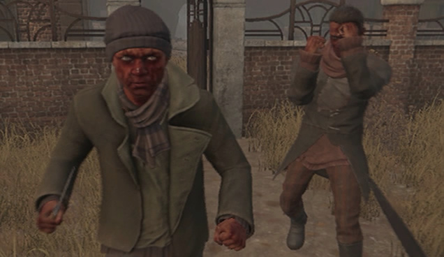

Pesquisar...

Pesquisar...


- Combate
- Comida
- Mapa Util
- Mostrar Tudo


Menu
- Home
- Trocas
- Videos
- +Guias


- Combate
- Comida
- Mapa Util
- Mostrar Tudo

Bem vindo ao nosso guia de combate! Aqui vou explicar detalhadamente sobre como lutar com os inimigos tanto de forma corpo-a-corpo quanto a distancia, e, para finalizar, vamos aprender sobre algumas mecanicas acompanhadas de dicas bastante uteis!


- Caso voce esteja tendo problemas com Odongs, recomendo ver nosso guia específico sobre eles aqui. (guia pendente)
ATENÇÃO: Jamais lute usando os punhos ou ate mesmo facas contra inimigos que tambem tenham facas, apesar de ser sim possivel, o risco é muito alto e qualquer erro pode resultar em graves consequências. Eu sempre lido com inimigos armados utilizando ataques corpo-a-corpo potentes na forma furtiva, ou caso furtividade nao seja uma opção, tiros na cabeça com armas de fogo são sempre uma alternativa.


Um dos seus maiores aliados no combate corpo a corpo é o ataque potente, apesar dele utilizar muita energia o dano que ele causa combinado com o atordoamento temporário ao inimigo, o torna extremamente útil para causar dano, sem receber de volta. Apesar de parecer simples, esse estilo de combate requer uma boa noção de timing ja que o ataque potente demora um tempo para ser executado.
 Somente o suficiente para o ataques do mesmo não o alcançarem.
Somente o suficiente para o ataques do mesmo não o alcançarem.
Se mova para trás sempre que necessario evitando virar de costas.
Certifique-se que você tem espaço para se afastar e uma rota de fuga.
Sempre espere o inimigo se aproximar primeiro.
Certifique-se que você tem energia suficiente para o ataque.
Se mova para trás enquanto bloqueia para ganhar tempo e energia.
Fique atento aos movimentos do inimigo!
Caso o inimigo desvie do ataque, se afaste e repita todo o processo.
Os inimigos saem rapido do atordoamento mas as vezes demoram um tempo até voltarem a persegui-lo.
Aproveite o tempo que conseguir para bloquear e recuperar sua energia sem se arriscar tanto.
Tome cuidado com os chutes! caso seja atingido por um, fuja, crie uma certa distancia do inimigo e se ainda tiver vida suficiente repita todo o processo des do passo 1. (Dicas detalhadas de como fugir no final da pagina na secão "Mecanicas")